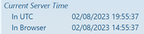
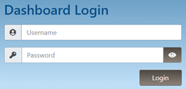
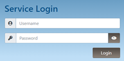
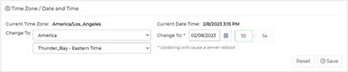
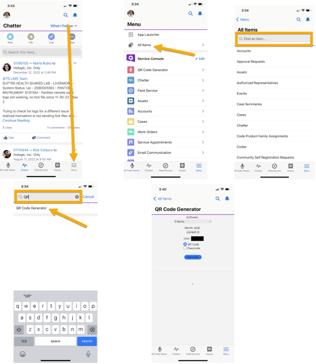
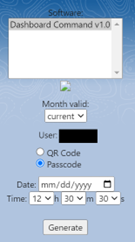
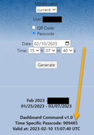

Login Failure for Dashboard Command Service Login
Error Code
When attempting to login to Dashboard Command, received Login failed at the top-right of the browser window.
Pop-up box that appears when login fails.
Complaint Description
To log into any Panther Dashboard Command via Service Login, regardless of region, use your Hologic Single Sign-On user nameas the user, also knows as the Domain User Name, in conjunction with a one-time password generated from an authenticator app, such as Okta Verify, Google Authenticator or Authy.
Note: For instructions on generating or creating a one-time password, see TB-01603: Using Time-Based One-Time Authentication.
Success of time-based authentication is dependent on accurate time on both the device with the authenticator app, as well as the device the one-time passwords are being input on.
Repeated login failures are likely due to the Dashboard Command time being incorrectly set.

Example shows Dashboard Command’s time at the bottom-left of the screen.
Note: Dashboard Command time cannot be set without an administrator’s password.
Technical Support
N/A
Field Service
There are two possible resolutions to this issue: (1) login using the customer’s admin credentials; (2) generate a one-time password based on the Dashboard Command’s current time. Both are equally effective, but the first may not be possible depending on available resources.
Properly Set Time via Standard Login, Retry Service Login
It is possible to change the time on Dashboard Command without Service Login.
Resolution:
-
Contact the site’s local Molecular Applications Specialist (MAS) or the customer’s lab manager to retrieve the password for Dashboard Command.
Note: The default username for the Dashboard’s administrator account is ‘admin’. The MAS or customer may have set an alternate administrator username.
-
With this password, navigate to the Dashboard (Standard) Login.


Note the difference between Dashboard Login and Service Login.
-
Login with the credentials from Step 1. Once logged in, the wording at the top-right changes from Login to Logout.
-
To change Dashboard Command time, click the menu button at the top-right, and navigate to Administrator > System.
-
In the Time Zone / Date and Time pane, select the appropriate location for Time Zone, then set the correct date and time in the Change To field.

Set date and time in the Time Zone / Date and Time pane.
Note: Dashboard Command will automatically account for the time zone and properly set UTC/GMT time.
-
Click Save at the bottom-right of the Time Zone / Date and Time pane. If the time changed, the system will automatically reboot. Reboot completes in approximately two to five minutes.
Test:
When reboot completes, reattempt Service Login using Hologic Single Sign-On credentials and One-Time Password from your authenticator app.
Retrieve One-Time Password for Specified Time via SalesForce QR Code Generator, Properly Set Time, Retry Login
Within SalesForce, and the SalesForce app, it is possible to retrieve the designated one-time password for any given moment in time.
Resolution:
-
Access SalesForce via web browser or mobile device app on the iPhone or iPad.
-
If using web browser, click the Service Console App drop-down, and find QR Code Generator. If the QR Code Generator app is not available, click the ‘Edit’ button at the bottom, select the ‘Add More Items’ button at the top-right of the window, find ‘QR Code Generator’, and add the Nav Item. Click into the QR Code Generator to access it.
-
If using SalesForce app, click the Menu button at the bottom-right, click the ‘All Items’ field at the top, and search ‘QR’. It should pull up the QR Code Generator. Click the QR Code Generator.

-
-
At the QR Code Generator, under Software, click or press ‘Dashboard Command v1.0’ in the box.
-
Click the radio button for ‘Passcode’. A new section opens below it.

-
Under the Date field, input the UTC date listed on Dashboard Command.
Note: This may differ from the current date.
-
Under the time field, input the UTC time listed on Dashboard Command, with a one to two minute buffer.
Example: If the UTC time is listed as 15:06:40, enter 15:07:40 for the time. You want to generate a code for 60 seconds in the future, so when Dashboard Command UTC time reaches 15:07:40, you have the appropriate code for that time.
-
Click Generate. After processing, a section below appears that lists the Time Specific Passcode, valid for the time and dates you specified in steps 4 and 5.

-
Attempt Service Login using your Hologic Single Sign-On and the Time Specific Passcode retrieved in Step 6.
-
To change Dashboard Command time, click the menu button at the top-right, and navigate to Administrator > System.
-
In the Time Zone / Date and Time pane, select the appropriate location for Time Zone, and change it to the current time.

Time Zone / Date and Time location.
Note: Dashboard Command will automatically account for the time zone and properly set UTC/GMT time.
-
Click Save at the bottom-right of the Time Zone / Date and Time pane. If the time changed, the system will automatically reboot. Reboot completes in approximately two to five minutes.
Test:
When reboot completes, reattempt Service Login using Hologic Single Sign-On credentials and One-Time Password from your authenticator app.
 button at the top of the page to send feedback, comments, or change requests.
button at the top of the page to send feedback, comments, or change requests.